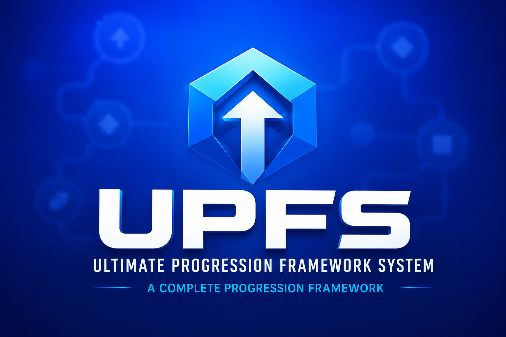
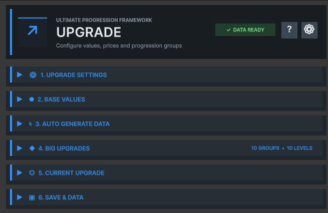

The Complete Progression Foundation for Unity
A modular, data-driven foundation for creating upgrades, currencies, economies and progression-focused game systems through professional ScriptableObject workflows.

Upgrade SO defines the progression structure, levels, values, prices, milestones, distributions and runtime state used by the rest of UPFS.
Design simple level sequences or grouped milestone progressions. Generate balanced data, inspect the active state, trigger detailed events and persist progress from one authoritative asset.

Extend your progression system with optional components designed to work together seamlessly.
Reusable integer and floating-point balances with persistence and change events.
Explore componentMulti-currency costs, wallets, affordability checks and controlled purchases.
Explore componentNames, descriptions, icons and strongly typed custom metadata for progression UI.
Explore componentGuided explanations for first-time setup, supported by structured technical reference.